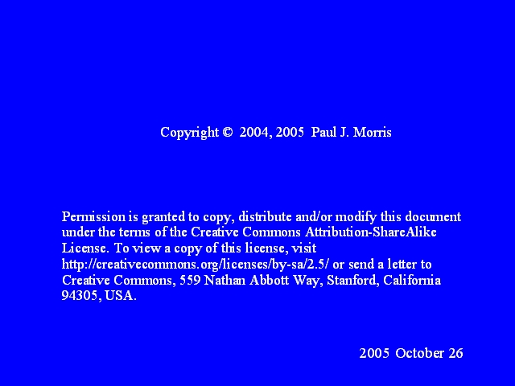

Notes:
Copyright © 2004, 2005 Paul J. Morris
Permission is granted to copy, distribute and/or modify this document under the terms of the Creative Commons Attribution-ShareAlike License. To view a copy of this license, visit http://creativecommons.org/licenses/by-sa/2.5/ or send a letter to Creative Commons, 559 Nathan Abbott Way, Stanford, California 94305, USA.